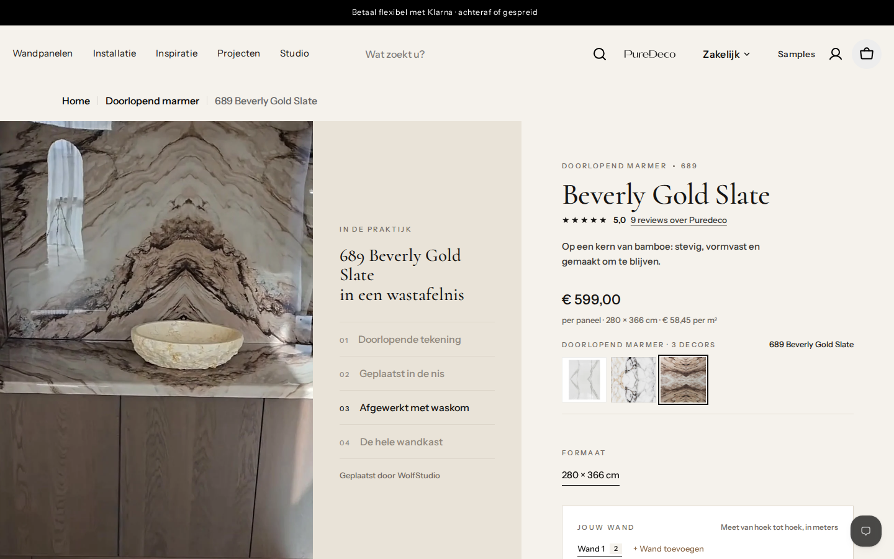
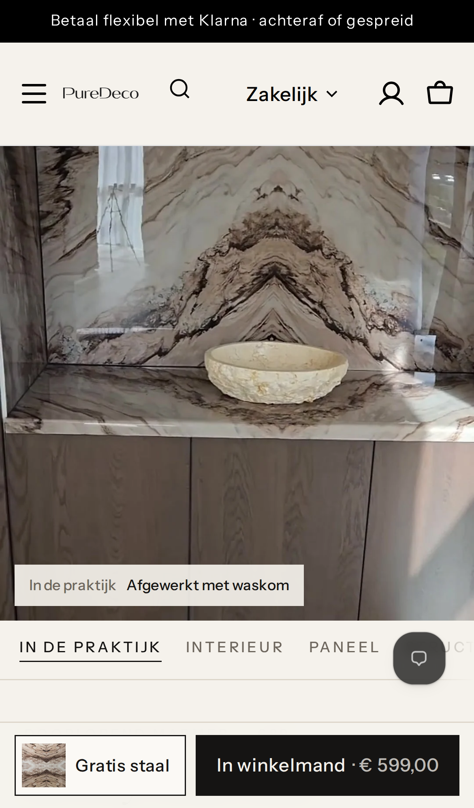

PureDeco · productpagina 689 Beverly Gold Slate · H1-kopie · voorstel
Zelfde blok "In de praktijk" als bij 812 Walnut Deep. De video speelt stil en in een lus; de stappen lichten mee op. Nog niets aangepast.
Desktop

Mobiel

Eerste beeld wordt de echte opname. Nu opent 689 met een render van een woonkamer. Met de video opent de pagina op "In de praktijk"; Interieur, Paneel, Structuur en Aansluiting blijven als tabs.
Teksten
Kop: 689 Beverly Gold Slate in een wastafelnis
Stappen: Doorlopende tekening · Geplaatst in de nis · Afgewerkt met waskom · De hele wandkast
Onderregel: Geplaatst door WolfStudio
Google: de pagina krijgt videogegevens (VideoObject) voor deze opname.
Technisch: alleen productvelden van 689 invullen (project_video, project_caption, project_steps, project_note, project_video_date). Het thema hoeft niet te veranderen. Dit zijn winkelgegevens: ze werken in elk thema dat het blok kent, dus nu alleen in de H1-kopie. Op de huidige live site verandert niets.
Optioneel: een link naar WolfStudio onder de video (website of Instagram), als je die wilt vermelden.